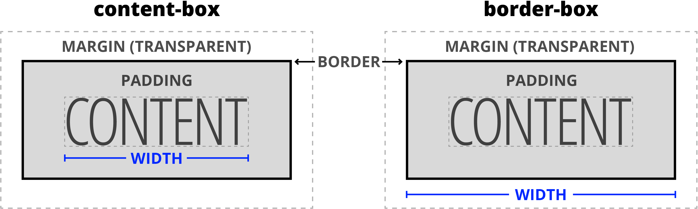

To begin laying out a page, it is best to do so from outside in. Get the larger conatiner element where you want them before moving on the smaller ones inside them.
Box sizing: content box or border box

*,::before , ::after{
box-sizing: border-box;
}
visible;
hidden;
clip;
scroll;
auto;
Ques. what are Mixins and how to achiev Multiple inheritence?
Ans.
Mixins offer a solution by enabling code reuse and achieving a form of multiple inheritance. A mixin is a way to incoperate methods and properties from object into another. this enhances modularity and flexibility in code design.
Mixins is a class that uses method from other object and no real inheritence relationship is established. using Object.assign
Ex
class Vehicle {
move() {
alert('Moving now');
}
}
let infareredSensor = {
checkTemperature(){
alert('Checking Temperatue');
}
}
Object.assign(Vehicle.prototype, infareredSensor);
myCar.move();
myCar.checkTemperature;